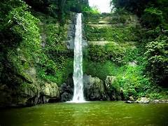

Why Bangladesh?
Sylhet has the most beautiful waterfall
Madhabkunda Waterfall at Barlekha Upazila in Moulvibazar is one of the largest waterfall in Bangladesh. It's about 200 ft high and a popular tourist spot in the country. The surrounding hill, nature and waterfall will give you a pleasant memory. On the way visitors can see the greenish beauty of tea garden, the hills and the zigzag road through the hills. The city is also home to several important landmarks, such as the Shah Jalal Dargah, which is one of the holiest sites in Bangladesh and attracts thousands of pilgrims every year.